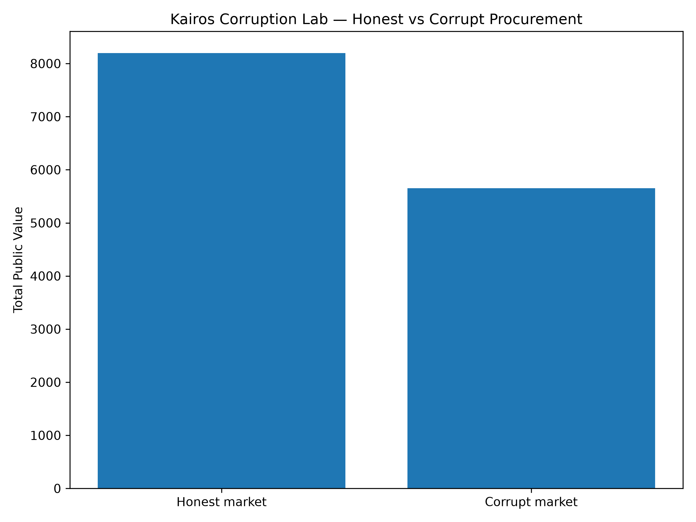
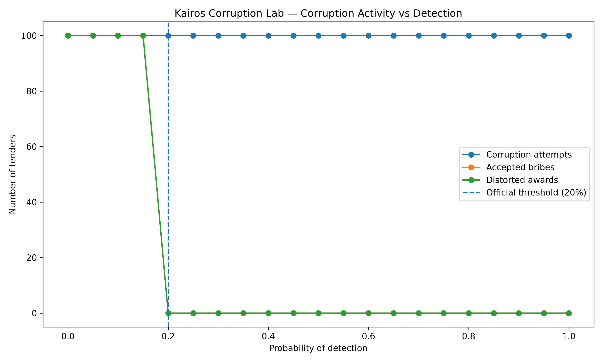
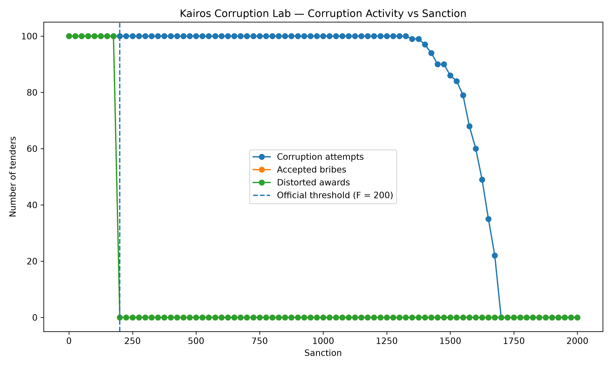
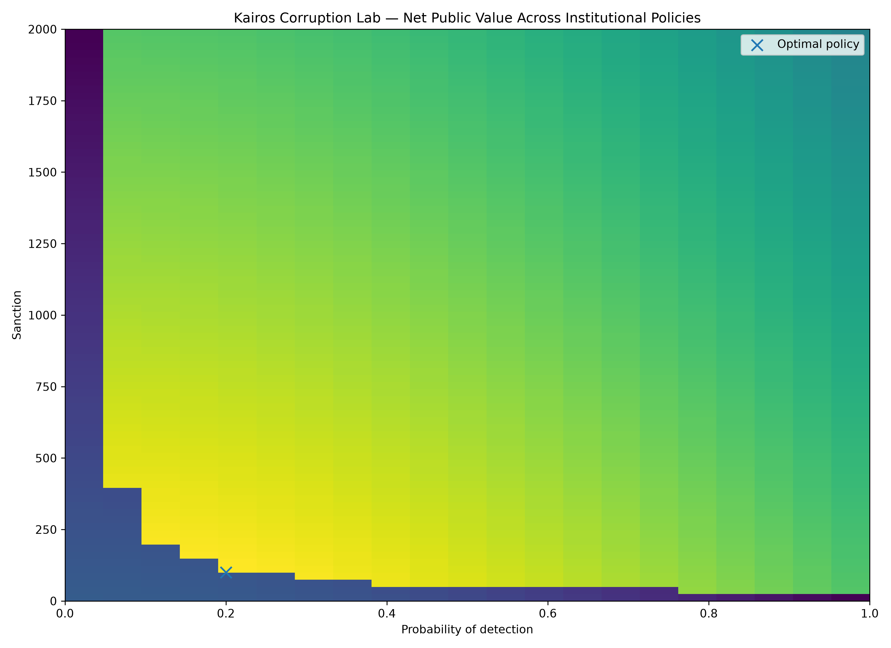
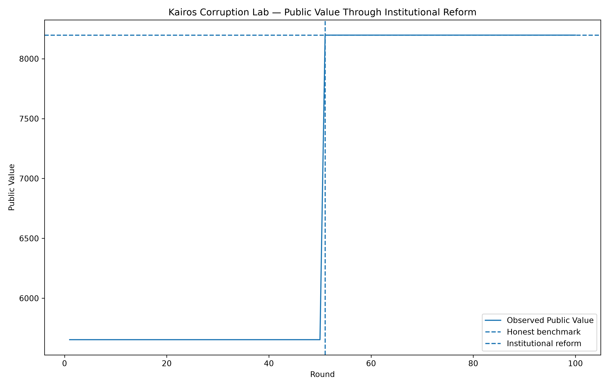
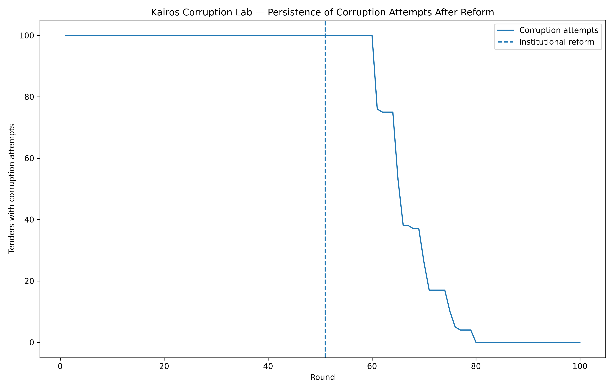
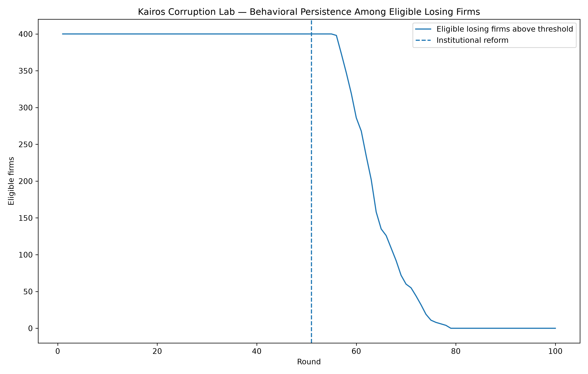

La corrupción no empieza con personas malas. Empieza con incentivos.
Un experimento con 100 licitaciones para entender cuánto valor puede destruir la corrupción y por qué castigar más no siempre es la mejor solución.
Cuando sobornar y aceptar el soborno siguen siendo rentables para ambas partes, la corrupción puede sostenerse; basta con romper esa rentabilidad para una sola de ellas —no con volver santos a todos— para que la estrategia corrupta deje de funcionar.
¿Y si el problema no fuera solamente la persona?
Cuando hablamos de corrupción solemos pensar en individuos. Pero si todo dependiera únicamente de encontrar personas honestas, cada cambio de funcionario debería resolver el problema.
Cuando hablamos de corrupción solemos pensar en individuos: una empresa ofrece dinero, un funcionario acepta y alguien roba. Pero si todo dependiera únicamente de encontrar personas honestas, cada cambio de funcionario debería resolver el problema.
La pregunta de este experimento es distinta:
Para estudiar esa pregunta, Kairos construyó una economía artificial: un mercado de compras públicas simulado, con reglas explícitas y observables, donde podemos cambiar una sola variable a la vez y ver exactamente qué ocurre.
Primero construimos un mercado honesto
Antes de estudiar la corrupción, necesitábamos un punto de comparación limpio: qué pasa cuando nadie soborna a nadie.
Cada empresa participante llega con cuatro características: precio, calidad, experiencia y riesgo. La adjudicación no depende simplemente de quién ofrece el precio más bajo. El Estado, en este modelo, calcula un índice de valor público que pondera esas cuatro dimensiones:
Aplicando esta regla a las 100 licitaciones, sin ningún tipo de soborno, el mercado honesto produce este resultado agregado:
Dejamos entrar la corrupción
Con las mismas 100 licitaciones, ahora permitimos que una empresa pueda ofrecer un soborno y que el funcionario pueda aceptarlo.
Escenario base del experimento:
Con esos parámetros, a las empresas les sigue resultando rentable sobornar, y al funcionario le sigue resultando rentable aceptar. Aplicamos la corrupción sobre las mismas 100 licitaciones y comparamos:

No sumamos el monto del soborno a la pérdida de valor público porque, dentro de este modelo, el soborno se trata como una transferencia entre agentes, no como una pérdida social adicional. La pérdida medida corresponde a la mala asignación del contrato.
Detectar más o sancionar más: no son lo mismo
El modelo nos deja mover, por separado, la probabilidad de detección y el tamaño de la sanción. Cada una actúa de forma distinta.
¿Qué ocurre si aumenta la probabilidad de detección?
Mantenemos la sanción fija en F = 100 y vamos subiendo la probabilidad de detección p:
- Con p < 20%, el funcionario todavía acepta el soborno.
- Con p = 20%, su beneficio esperado de aceptar llega a cero.
- En ese punto de indiferencia, la regla del experimento hace que el funcionario rechace.
Desde p = 20%, ningún soborno se acepta y ningún contrato se distorsiona, y el valor público vuelve a 8197.05.

Las empresas todavía pueden querer sobornar, pero la transacción deja de completarse: el incentivo del funcionario ya no la sostiene.
¿Y si en cambio castigamos más?
Ahora fijamos la probabilidad de detección en p = 10% y aumentamos la sanción F.
Con F = 200, el funcionario deja de aceptar el soborno. Pero las empresas siguen encontrando rentable ofrecerlo durante mucho más tiempo:

Detectar más o castigar más: combinaciones equivalentes
El modelo mostró que distintas combinaciones de detección y sanción pueden producir el mismo castigo esperado:
= 20
= 20
= 20
En las tres combinaciones, p · F = 20, y la corrupción efectiva desaparece. Si varias políticas funcionan igual de bien, ¿cuál conviene? Esa pregunta nos lleva al costo de controlar.
Controlar también cuesta
Detectar y sancionar no son gratuitos. Auditar, investigar y sancionar consume recursos institucionales.
Definimos dos funciones de costo, una para la detección y otra para la sanción:
Y definimos el valor público neto como:
Con el escenario que elimina la corrupción a menor costo relativo (p = 20%, F = 100), el costo institucional es 40 + 50 = 90:

Un resultado extraño: controlar poco puede ser peor que no controlar
Comparemos el escenario base de corrupción (p = 10%, F = 100) contra no controlar nada (p = 0, F = 0):
| Escenario | Valor público | Costo institucional | Valor neto |
|---|---|---|---|
| Control débil (p=10%, F=100) | 5653.88 | 60 | 5593.88 |
| Sin ningún control (p=0, F=0) | 5653.88 | 0 | 5653.88 |
El valor público bruto es idéntico en ambos casos —la corrupción no cambió de comportamiento—, pero el gobierno con control débil terminó con menos valor neto que el gobierno que no controló nada.
¿Depende esto de cómo definimos los costos?
Probamos 9 estructuras de costo distintas, variando el peso relativo de detectar y de sancionar. De todas ellas, solo emergieron dos políticas óptimas:
Óptima cuando sancionar es relativamente más caro que detectar.
Óptima cuando detectar es relativamente más caro que sancionar.
Ambas cumplen p · F = 20. No existe una combinación universalmente óptima dentro del experimento: la mezcla eficiente depende de los costos relativos, pero la frontera estratégica —p · F = 20— permaneció estable en todos los casos.
¿Qué ocurre si la corrupción ya se volvió una costumbre?
Todo lo anterior fue estático. Ahora dejamos correr el experimento a lo largo de 100 rondas, con una reforma real ocurriendo a la mitad del camino.
Simulamos 100 rondas de licitaciones, con una regla que cambia a la mitad del experimento:
p = 10%, F = 100 — la corrupción sigue siendo rentable para ambas partes.
p = 20%, F = 100 — entra en vigor la reforma que aumenta la detección.
Antes de la reforma, cada ronda repetía el mismo patrón: 100 intentos, 100 sobornos aceptados, 100 contratos distorsionados. Acumulado en 50 rondas:
La reforma cambia los resultados de inmediato
En la ronda 51, al aumentar la detección, los sobornos aceptados pasan de 100 a 0 inmediatamente. El valor público salta de 5653.88 a 8197.05 en una sola ronda.

Pero el comportamiento tarda más
Aunque ningún soborno vuelve a aceptarse después de la ronda 51, las empresas continúan intentando ofrecerlo durante un tiempo:
| Ronda | 60 | 65 | 70 | 75 | 80 |
|---|---|---|---|---|---|
| Intentos de soborno | 100 | 53 | 26 | 10 | 0 |


Qué aprendimos
Seis ideas que resumen el experimento completo.
- La corrupción destruyó valor principalmente mediante mala asignación, no por el monto del soborno en sí.
- Basta con cambiar el incentivo de una sola de las dos partes para romper la transacción.
- El deseo de sobornar puede sobrevivir mucho después de que la corrupción efectiva desaparece.
- Aumentar indefinidamente la vigilancia o las sanciones no fue eficiente una vez que incluimos los costos institucionales.
- La mezcla eficiente entre detección y sanción dependió de sus costos relativos, no de una regla universal.
- Una reforma puede cambiar los resultados de inmediato, mientras las conductas tardan en adaptarse.
Qué NO demuestra este experimento
Es tan importante decir qué mostramos como decir qué no estamos afirmando.
- No estima corrupción real de Guatemala.
- No utiliza datos de Guatecompras.
- No estima probabilidades reales de detección.
- No calcula sanciones óptimas reales.
- No representa todas las formas posibles de corrupción.
- No prueba que 20% de detección sea una cifra real deseable.
- No estima que la adaptación real tarde 29 rondas.
Todos los números dependen de los supuestos artificiales del modelo. El propósito de este experimento es estudiar mecanismos de incentivos, no medir un país.
Tal vez la pregunta equivocada sea cómo encontrar personas que nunca quieran corromperse.
Quizá una pregunta más útil sea cómo diseñar instituciones donde corromper deje de ser una estrategia que funciona.
Las instituciones no necesitan eliminar todas las malas intenciones para cambiar los resultados. A veces necesitan algo más sencillo: cambiar los incentivos.
Para profundizar
Esta publicación presenta el argumento de forma introductoria. La investigación completa detalla el diseño del experimento, las reglas de decisión de empresas y funcionarios, el análisis de sensibilidad completo con las 9 estructuras de costo y la especificación del experimento dinámico.
Leer la investigación completa →Nota metodológica
- Este es un experimento artificial y reproducible, diseñado para estudiar mecanismos de incentivos en compras públicas, no una medición empírica.
- Las 100 licitaciones, las 500 ofertas, los parámetros de soborno, detección y sanción, y las funciones de costo institucional son supuestos del modelo, definidos para poder comparar el mismo mercado bajo distintas reglas.
- La versión técnica completa incluye la especificación exacta del experimento y el código utilizado para reproducirlo.
Esta es una versión divulgativa de un experimento de teoría de juegos. Ningún resultado aquí presentado debe interpretarse como una estimación de corrupción real en Guatemala ni en ningún otro país.